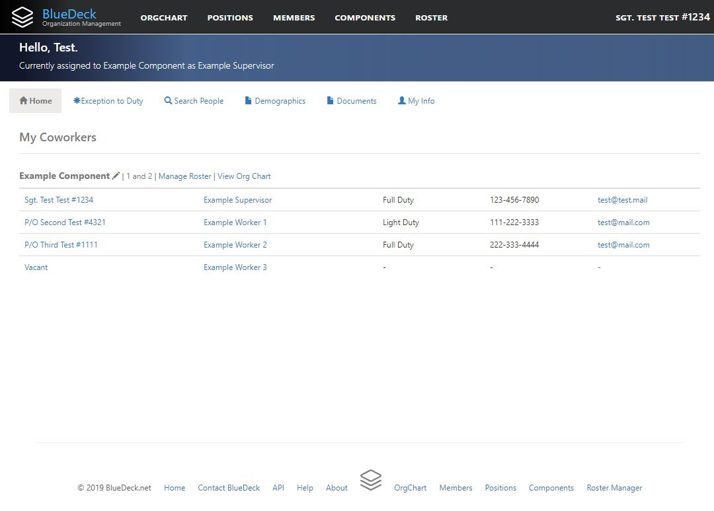
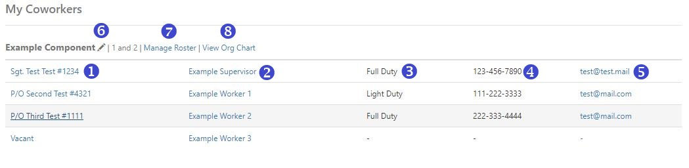

Home Page View
If you have an active account, you will be directed to the Home Page when you log on to BlueDeck:

The Home Page has several tabs that you can use to view information or access functionality:
The "Home" tab is the default. Under the "Home" tab, you will see a list titled "My Coworkers." This list will show you basic contact information for all of the organizational employees that are assigned to the same component as you are. This is intended to help you stay in touch with the people closest to you.
